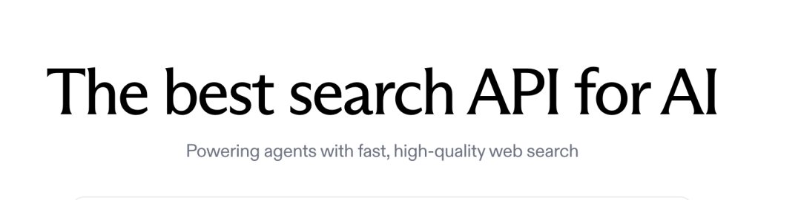
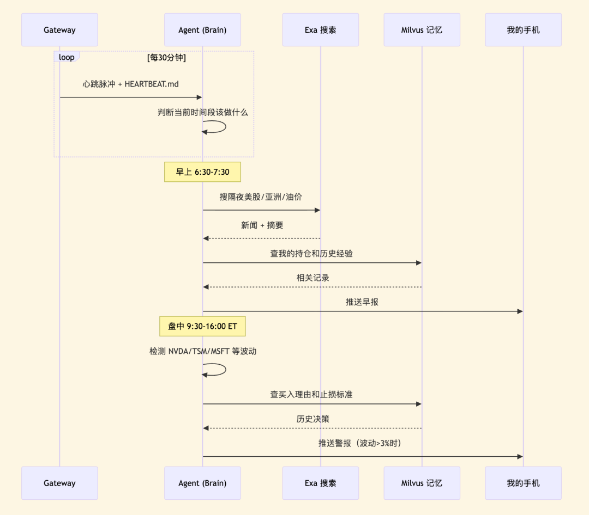
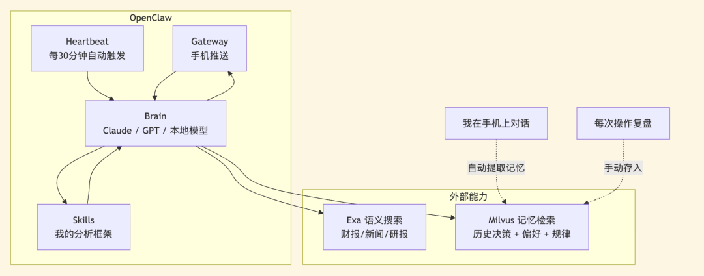

PS：先提前预告下，这个项目解决不了不赚钱的问题，但能帮助减少冲动交易，解决信息搜集、分析效率低问题。当然，也有同事吐槽，这是个韭菜RL，大家有选择地参考与批判一下就好。
PS：先提前预告下，这个项目解决不了不赚钱的问题，但能帮助减少冲动交易，解决信息搜集、分析效率低问题。当然，也有同事吐槽，这是个韭菜RL，大家有选择地参考与批判一下就好。01
信息搜集：如何用Exa监控全球动态

from exa_py import Exaexa = Exa(api_key="your-api-key")# Semantic search — describe what you want in plain languageresult = exa.search("Why did NVIDIA stock drop despite strong Q4 2026 earnings",type="neural", # semantic search, not keywordnum_results=10,start_published_date="2026-02-25", # only search for latest informationcontents={"text": {"max_characters": 3000}, # get full article text"highlights": {"num_sentences": 3}, # key sentences"summary": {"query": "What caused the stock drop?"} # AI summary})for r in result.results:print(f"[{r.published_date}] {r.title}")print(f" Summary: {r.summary}")print(f" URL: {r.url}\n")
# Only financial reports from trusted sourcesearnings = exa.search("NVIDIA Q4 2026 earnings analysis",category="financial report",num_results=5,include_domains=["reuters.com", "bloomberg.com", "wsj.com"],contents={"highlights": True})
# "Show me more analysis like this one"similar = exa.find_similar(url="https://fortune.com/2026/02/25/nvidia-nvda-earnings-q4-results",num_results=10,start_published_date="2026-02-20",contents={"text": {"max_characters": 2000}})
# Complex question — needs multi-source synthesisdeep_result = exa.search("How will Middle East tensions affect global tech supply chain and semiconductor stocks",type="deep",num_results=8,contents={"summary": {"query": "Extract: 1) supply chain risk 2) stock impact 3) timeline"}})
# Breaking news only — today' iss date 2026-03-05breaking = exa.search("US stock market breaking news today",category="news",num_results=20,start_published_date="2026-03-05",contents={"highlights": {"num_sentences": 2}})
02
存储：让Milvus记住我的所有历史操作与偏好
from pymilvus import MilvusClient, DataTypefrom openai import OpenAImilvus = MilvusClient("./my_investment_brain.db")llm = OpenAI()def embed(text: str) -> list[float]:return llm.embeddings.create(input=text, model="text-embedding-3-small").data[0].embedding# Collection 1: past decisions and lessons# Every trade I make, I write a short review afterwardmilvus.create_collection("decisions",dimension=1536,auto_id=True)# Collection 2: my preferences and biases# Things like "I tend to hold tech stocks too long"milvus.create_collection("preferences",dimension=1536,auto_id=True)# Collection 3: market patterns I've observed# "When VIX > 30 and Fed is dovish, buy the dip usually works"milvus.create_collection("patterns",dimension=1536,auto_id=True)
import jsondef extract_and_store_memories(conversation: list[dict]) -> int:"""After each chat session, extract personal insightsand store them in Milvus automatically."""# Ask LLM to extract structured memories from conversationextraction_prompt = """Analyze this conversation and extract any personal investment insights.Look for:1. DECISIONS: specific buy/sell actions and reasoning2. PREFERENCES: risk tolerance, sector biases, holding patterns3. PATTERNS: market observations, correlations the user noticed4. LESSONS: things the user learned or mistakes they reflected onReturn a JSON array. Each item has:- "type": one of "decision", "preference", "pattern", "lesson"- "content": the insight in 2-3 sentences- "confidence": how explicitly the user stated this (high/medium/low)Only extract what the user clearly expressed. Do not infer or guess.If nothing relevant, return an empty array."""response = llm.chat.completions.create(model="gpt-4o",messages=[{"role": "system", "content": extraction_prompt},*conversation],response_format={"type": "json_object"})memories = json.loads(response.choices[0].message.content)stored = 0for mem in memories.get("items", []):if mem["confidence"] == "low":continue # skip uncertain inferencescollection = {"decision": "decisions","lesson": "decisions","preference": "preferences","pattern": "patterns"}.get(mem["type"], "decisions")# Check for duplicates — don't store the same insight twiceexisting = milvus.search(collection,data=[embed(mem["content"])],limit=1,output_fields=["text"])if existing[0] and existing[0][0]["distance"] > 0.92:continue # too similar to existing memory, skipmilvus.insert(collection, [{"vector": embed(mem["content"]),"text": mem["content"],"type": mem["type"],"source": "chat_extraction","date": "2026-03-05"}])stored += 1return stored
def recall_my_experience(situation: str) -> dict:"""Given a current market situation, retrieve my relevantpast experiences, preferences, and observed patterns."""query_vec = embed(situation)# Search all three collections in parallelpast_decisions = milvus.search("decisions", data=[query_vec], limit=3,output_fields=["text", "date", "tag"])my_preferences = milvus.search("preferences", data=[query_vec], limit=2,output_fields=["text", "type"])my_patterns = milvus.search("patterns", data=[query_vec], limit=2,output_fields=["text"])return {"past_decisions": [h["entity"] for h in past_decisions[0]],"preferences": [h["entity"] for h in my_preferences[0]],"patterns": [h["entity"] for h in my_patterns[0]]}# When Agent analyzes current tech selloff:context = recall_my_experience("tech stocks dropping 3-4% due to Middle East tensions, March 2026")# context now contains:# - My 2024-10 lesson about not panic-selling during ME crisis# - My preference: "I tend to overweight geopolitical risk"# - My pattern: "tech selloffs from geopolitics recover in 1-3 weeks"
03
分析：把我的分析逻辑写成Openclaw的Skill
---name: post-earnings-evaldescription: >Evaluate whether to buy, hold, or sell after an earnings report.Trigger when discussing any stock's post-earnings price action,or when a watchlist stock reports earnings.---## Post-Earnings Evaluation FrameworkWhen analyzing a stock after earnings release:### Step 1: Get the factsUse Exa to search for:- Actual vs expected: revenue, EPS, forward guidance- Analyst reactions from top-tier sources- Options market implied move vs actual move### Step 2: Check my historyUse Milvus recall to find:- Have I traded this stock after earnings before?- What did I get right or wrong last time?- Do I have a known bias about this sector?### Step 3: Apply my rules- If revenue beat > 5% AND guidance raised → lean BUY- If stock drops > 5% on a beat → likely sentiment/macro driven- Check: is the drop about THIS company or the whole market?- Check my history: did I overreact to similar drops before?- If P/E > 2x sector average after beat → caution, priced for perfection### Step 4: Output formatSignal: BUY / HOLD / SELL / WAITConfidence: High / Medium / LowReasoning: 3 bullets maxPast mistake reminder: what I got wrong in similar situationsIMPORTANT: Always surface my past mistakes. I have a tendency tolet fear override data. If my Milvus history shows I regrettedselling after a dip, say so explicitly.
# HEARTBEAT.md — runs every 30 minutes automatically## Morning brief (6:30-7:30 AM only)- Use Exa to search overnight US market news, Asian markets, oil prices- Search Milvus for my current positions and relevant past experiences- Generate a personalized morning brief (under 500 words)- Flag anything related to my past mistakes or current holdings- End with 1-3 action items- Send the brief to my phone## Price alerts (during US market hours 9:30 AM - 4:00 PM ET)- Check price changes for: NVDA, TSM, MSFT, AAPL, GOOGL- If any stock moved more than 3% since last check:- Search Milvus for: why I hold this stock, my exit criteria- Generate alert with context and recommendation- Send alert to my phone## End of day summary (after 4:30 PM ET on weekdays)- Summarize today's market action for my watchlist- Compare actual moves with my morning expectations- Note any new patterns worth remembering
04
整体效果展示


05
尾声
作者介绍

张晨
Zilliz Algorithm Engineer
阅读推荐 80%的 Multi-Agent都是伪需求！如何判断是否需要Multi-Agent，以及如何搭？ Qwen3.5-397B+Milvus+ColQwen2，如何做基于PDF的多模态RAG知识库 开源|Milvus2.6又有功能上新啦！Embedding Function、N-gram、decay ranker、field-level boosting、Highlighting解读 实测｜春节我用三种姿势在手机上用Claude Code，上班路上也能当牛马了 AI互撕后code review表现会更好？Claude、Gemini、Codex、Qwen、MiniMax 最新模型测评